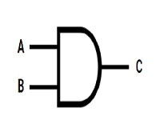
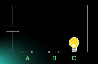
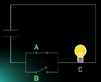

curso de eletrônica online
eletrônica digital

AULA 2 - PORTAS LÓGICAS
As portas lógicas são circuitos que processam os sinais binários para tomar decisões.
Vídeo Relacionado: Como fazer simulador Porta E no Arduíno
Porta Lógica E (AND)
A porta E realiza a operação de Multiplicação A * B = C

A porta E é equivalente a um cicuito de duas chaves em série, onde uma lâmpada só irá acender se as duas chaves estiverem ligadas, como na figura abaixo:

Tabela Verdade da porta AND, operação ADIÇÃO: A*B = C
ENTRADA A ENTRADA B SAIDA C LÂMPADA
0 0 0 DESLIGADA
0 1 0 DESLIGADA
1 0 0 DESLIGADA
1 1 1 LIGADA
Porta Lógica OU (OR)
A porta Lógica OU é equivalente a um circuito em paralelo, onde se ligarmos uma das chaves, a lâmpada acenderá.
Então quando temos nível 1 em alguma das entradas, a saída estará LIGADA
Tabela Verdade da porta OR, operação SOMA: A+B = C
ENTRADA A ENTRADA B SAIDA C LÂMPADA
0 0 0 DESLIGADA
0 1 1 LIGADA
1 0 1 LIGADA
1 1 1 LIGADA
voltar